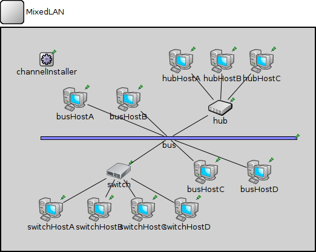
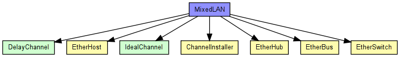
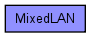

Sample Ethernet LAN containing eight hosts, a switch and a bus.
The following diagram shows usage relationships between types. Unresolved types are missing from the diagram. Click here to see the full picture.
The following diagram shows inheritance relationships for this type. Unresolved types are missing from the diagram. Click here to see the full picture.
| Name | Value | Description |
|---|---|---|
| isNetwork |
| Name | Type | Default value | Description |
|---|---|---|---|
| busHostA.cli.destAddress | string | "" |
destination MAC address, or module path name of destination station; empty means off |
| busHostA.cli.startTime | double | this.waitTime |
time of sending the first request |
| busHostA.cli.waitTime | double | uniform(0s,1s) |
interval between sending requests |
| busHostA.cli.reqLength | int | 100B |
length of request packets |
| busHostA.cli.respLength | int | 1KB |
length of response packets |
| busHostA.mac.promiscuous | bool | false |
if true, all packets are received, otherwise only the ones with matching destination MAC address |
| busHostA.mac.address | string | "auto" |
MAC address as hex string (12 hex digits), or "auto". "auto" values will be replaced by a generated MAC address in init stage 0. |
| busHostA.mac.txrate | double | 100Mbps |
maximum data rate supported by this station (bit/s); actually chosen speed may be lower due to auto- configuration. 0 means fully auto-configured. |
| busHostA.mac.duplexEnabled | bool | true |
whether duplex mode can be enabled or not; whether MAC will actually use duplex mode depends on the result of the auto-configuration process (duplex is only possible with DTE-to-DTE connection). |
| busHostA.mac.txQueueLimit | int | 1000 |
maximum number of frames queued up for transmission; additional frames are dropped. Only used if queueModule=="" |
| busHostA.mac.mtu | int | 1500 | |
| busHostB.cli.destAddress | string | "" |
destination MAC address, or module path name of destination station; empty means off |
| busHostB.cli.startTime | double | this.waitTime |
time of sending the first request |
| busHostB.cli.waitTime | double | uniform(0s,1s) |
interval between sending requests |
| busHostB.cli.reqLength | int | 100B |
length of request packets |
| busHostB.cli.respLength | int | 1KB |
length of response packets |
| busHostB.mac.promiscuous | bool | false |
if true, all packets are received, otherwise only the ones with matching destination MAC address |
| busHostB.mac.address | string | "auto" |
MAC address as hex string (12 hex digits), or "auto". "auto" values will be replaced by a generated MAC address in init stage 0. |
| busHostB.mac.txrate | double | 100Mbps |
maximum data rate supported by this station (bit/s); actually chosen speed may be lower due to auto- configuration. 0 means fully auto-configured. |
| busHostB.mac.duplexEnabled | bool | true |
whether duplex mode can be enabled or not; whether MAC will actually use duplex mode depends on the result of the auto-configuration process (duplex is only possible with DTE-to-DTE connection). |
| busHostB.mac.txQueueLimit | int | 1000 |
maximum number of frames queued up for transmission; additional frames are dropped. Only used if queueModule=="" |
| busHostB.mac.mtu | int | 1500 | |
| busHostC.cli.destAddress | string | "" |
destination MAC address, or module path name of destination station; empty means off |
| busHostC.cli.startTime | double | this.waitTime |
time of sending the first request |
| busHostC.cli.waitTime | double | uniform(0s,1s) |
interval between sending requests |
| busHostC.cli.reqLength | int | 100B |
length of request packets |
| busHostC.cli.respLength | int | 1KB |
length of response packets |
| busHostC.mac.promiscuous | bool | false |
if true, all packets are received, otherwise only the ones with matching destination MAC address |
| busHostC.mac.address | string | "auto" |
MAC address as hex string (12 hex digits), or "auto". "auto" values will be replaced by a generated MAC address in init stage 0. |
| busHostC.mac.txrate | double | 100Mbps |
maximum data rate supported by this station (bit/s); actually chosen speed may be lower due to auto- configuration. 0 means fully auto-configured. |
| busHostC.mac.duplexEnabled | bool | true |
whether duplex mode can be enabled or not; whether MAC will actually use duplex mode depends on the result of the auto-configuration process (duplex is only possible with DTE-to-DTE connection). |
| busHostC.mac.txQueueLimit | int | 1000 |
maximum number of frames queued up for transmission; additional frames are dropped. Only used if queueModule=="" |
| busHostC.mac.mtu | int | 1500 | |
| busHostD.cli.destAddress | string | "" |
destination MAC address, or module path name of destination station; empty means off |
| busHostD.cli.startTime | double | this.waitTime |
time of sending the first request |
| busHostD.cli.waitTime | double | uniform(0s,1s) |
interval between sending requests |
| busHostD.cli.reqLength | int | 100B |
length of request packets |
| busHostD.cli.respLength | int | 1KB |
length of response packets |
| busHostD.mac.promiscuous | bool | false |
if true, all packets are received, otherwise only the ones with matching destination MAC address |
| busHostD.mac.address | string | "auto" |
MAC address as hex string (12 hex digits), or "auto". "auto" values will be replaced by a generated MAC address in init stage 0. |
| busHostD.mac.txrate | double | 100Mbps |
maximum data rate supported by this station (bit/s); actually chosen speed may be lower due to auto- configuration. 0 means fully auto-configured. |
| busHostD.mac.duplexEnabled | bool | true |
whether duplex mode can be enabled or not; whether MAC will actually use duplex mode depends on the result of the auto-configuration process (duplex is only possible with DTE-to-DTE connection). |
| busHostD.mac.txQueueLimit | int | 1000 |
maximum number of frames queued up for transmission; additional frames are dropped. Only used if queueModule=="" |
| busHostD.mac.mtu | int | 1500 | |
| switchHostA.cli.destAddress | string | "" |
destination MAC address, or module path name of destination station; empty means off |
| switchHostA.cli.startTime | double | this.waitTime |
time of sending the first request |
| switchHostA.cli.waitTime | double | uniform(0s,1s) |
interval between sending requests |
| switchHostA.cli.reqLength | int | 100B |
length of request packets |
| switchHostA.cli.respLength | int | 1KB |
length of response packets |
| switchHostA.mac.promiscuous | bool | false |
if true, all packets are received, otherwise only the ones with matching destination MAC address |
| switchHostA.mac.address | string | "auto" |
MAC address as hex string (12 hex digits), or "auto". "auto" values will be replaced by a generated MAC address in init stage 0. |
| switchHostA.mac.txrate | double | 100Mbps |
maximum data rate supported by this station (bit/s); actually chosen speed may be lower due to auto- configuration. 0 means fully auto-configured. |
| switchHostA.mac.duplexEnabled | bool | true |
whether duplex mode can be enabled or not; whether MAC will actually use duplex mode depends on the result of the auto-configuration process (duplex is only possible with DTE-to-DTE connection). |
| switchHostA.mac.txQueueLimit | int | 1000 |
maximum number of frames queued up for transmission; additional frames are dropped. Only used if queueModule=="" |
| switchHostA.mac.mtu | int | 1500 | |
| switchHostB.cli.destAddress | string | "" |
destination MAC address, or module path name of destination station; empty means off |
| switchHostB.cli.startTime | double | this.waitTime |
time of sending the first request |
| switchHostB.cli.waitTime | double | uniform(0s,1s) |
interval between sending requests |
| switchHostB.cli.reqLength | int | 100B |
length of request packets |
| switchHostB.cli.respLength | int | 1KB |
length of response packets |
| switchHostB.mac.promiscuous | bool | false |
if true, all packets are received, otherwise only the ones with matching destination MAC address |
| switchHostB.mac.address | string | "auto" |
MAC address as hex string (12 hex digits), or "auto". "auto" values will be replaced by a generated MAC address in init stage 0. |
| switchHostB.mac.txrate | double | 100Mbps |
maximum data rate supported by this station (bit/s); actually chosen speed may be lower due to auto- configuration. 0 means fully auto-configured. |
| switchHostB.mac.duplexEnabled | bool | true |
whether duplex mode can be enabled or not; whether MAC will actually use duplex mode depends on the result of the auto-configuration process (duplex is only possible with DTE-to-DTE connection). |
| switchHostB.mac.txQueueLimit | int | 1000 |
maximum number of frames queued up for transmission; additional frames are dropped. Only used if queueModule=="" |
| switchHostB.mac.mtu | int | 1500 | |
| switchHostC.cli.destAddress | string | "" |
destination MAC address, or module path name of destination station; empty means off |
| switchHostC.cli.startTime | double | this.waitTime |
time of sending the first request |
| switchHostC.cli.waitTime | double | uniform(0s,1s) |
interval between sending requests |
| switchHostC.cli.reqLength | int | 100B |
length of request packets |
| switchHostC.cli.respLength | int | 1KB |
length of response packets |
| switchHostC.mac.promiscuous | bool | false |
if true, all packets are received, otherwise only the ones with matching destination MAC address |
| switchHostC.mac.address | string | "auto" |
MAC address as hex string (12 hex digits), or "auto". "auto" values will be replaced by a generated MAC address in init stage 0. |
| switchHostC.mac.txrate | double | 100Mbps |
maximum data rate supported by this station (bit/s); actually chosen speed may be lower due to auto- configuration. 0 means fully auto-configured. |
| switchHostC.mac.duplexEnabled | bool | true |
whether duplex mode can be enabled or not; whether MAC will actually use duplex mode depends on the result of the auto-configuration process (duplex is only possible with DTE-to-DTE connection). |
| switchHostC.mac.txQueueLimit | int | 1000 |
maximum number of frames queued up for transmission; additional frames are dropped. Only used if queueModule=="" |
| switchHostC.mac.mtu | int | 1500 | |
| switchHostD.cli.destAddress | string | "" |
destination MAC address, or module path name of destination station; empty means off |
| switchHostD.cli.startTime | double | this.waitTime |
time of sending the first request |
| switchHostD.cli.waitTime | double | uniform(0s,1s) |
interval between sending requests |
| switchHostD.cli.reqLength | int | 100B |
length of request packets |
| switchHostD.cli.respLength | int | 1KB |
length of response packets |
| switchHostD.mac.promiscuous | bool | false |
if true, all packets are received, otherwise only the ones with matching destination MAC address |
| switchHostD.mac.address | string | "auto" |
MAC address as hex string (12 hex digits), or "auto". "auto" values will be replaced by a generated MAC address in init stage 0. |
| switchHostD.mac.txrate | double | 100Mbps |
maximum data rate supported by this station (bit/s); actually chosen speed may be lower due to auto- configuration. 0 means fully auto-configured. |
| switchHostD.mac.duplexEnabled | bool | true |
whether duplex mode can be enabled or not; whether MAC will actually use duplex mode depends on the result of the auto-configuration process (duplex is only possible with DTE-to-DTE connection). |
| switchHostD.mac.txQueueLimit | int | 1000 |
maximum number of frames queued up for transmission; additional frames are dropped. Only used if queueModule=="" |
| switchHostD.mac.mtu | int | 1500 | |
| switch.relayUnit.addressTableFile | string |
set to empty string if not used |
|
| switch.relayUnit.addressTableSize | int |
max size of address table |
|
| switch.relayUnit.agingTime | double |
max idle time for address table entries (when it expires, entry is removed from the table) |
|
| switch.mac.address | string | "auto" |
MAC address as hex string (12 hex digits), or "auto". "auto" values will be replaced by a generated MAC address in init stage 0. |
| switch.mac.txrate | double | 100Mbps |
maximum data rate supported by this station (bit/s); actually chosen speed may be lower due to auto- configuration. 0 means fully auto-configured. |
| switch.mac.duplexEnabled | bool | true |
whether duplex mode can be enabled or not; whether MAC will actually use duplex mode depends on the result of the auto-configuration process (duplex is only possible with DTE-to-DTE connection). |
| switch.mac.txQueueLimit | int | 1000 |
maximum number of frames queued up for transmission; additional frames are dropped. Only used if queueModule=="" |
| switch.mac.mtu | int | 1500 | |
| hubHostA.cli.destAddress | string | "" |
destination MAC address, or module path name of destination station; empty means off |
| hubHostA.cli.startTime | double | this.waitTime |
time of sending the first request |
| hubHostA.cli.waitTime | double | uniform(0s,1s) |
interval between sending requests |
| hubHostA.cli.reqLength | int | 100B |
length of request packets |
| hubHostA.cli.respLength | int | 1KB |
length of response packets |
| hubHostA.mac.promiscuous | bool | false |
if true, all packets are received, otherwise only the ones with matching destination MAC address |
| hubHostA.mac.address | string | "auto" |
MAC address as hex string (12 hex digits), or "auto". "auto" values will be replaced by a generated MAC address in init stage 0. |
| hubHostA.mac.txrate | double | 100Mbps |
maximum data rate supported by this station (bit/s); actually chosen speed may be lower due to auto- configuration. 0 means fully auto-configured. |
| hubHostA.mac.duplexEnabled | bool | true |
whether duplex mode can be enabled or not; whether MAC will actually use duplex mode depends on the result of the auto-configuration process (duplex is only possible with DTE-to-DTE connection). |
| hubHostA.mac.txQueueLimit | int | 1000 |
maximum number of frames queued up for transmission; additional frames are dropped. Only used if queueModule=="" |
| hubHostA.mac.mtu | int | 1500 | |
| hubHostB.cli.destAddress | string | "" |
destination MAC address, or module path name of destination station; empty means off |
| hubHostB.cli.startTime | double | this.waitTime |
time of sending the first request |
| hubHostB.cli.waitTime | double | uniform(0s,1s) |
interval between sending requests |
| hubHostB.cli.reqLength | int | 100B |
length of request packets |
| hubHostB.cli.respLength | int | 1KB |
length of response packets |
| hubHostB.mac.promiscuous | bool | false |
if true, all packets are received, otherwise only the ones with matching destination MAC address |
| hubHostB.mac.address | string | "auto" |
MAC address as hex string (12 hex digits), or "auto". "auto" values will be replaced by a generated MAC address in init stage 0. |
| hubHostB.mac.txrate | double | 100Mbps |
maximum data rate supported by this station (bit/s); actually chosen speed may be lower due to auto- configuration. 0 means fully auto-configured. |
| hubHostB.mac.duplexEnabled | bool | true |
whether duplex mode can be enabled or not; whether MAC will actually use duplex mode depends on the result of the auto-configuration process (duplex is only possible with DTE-to-DTE connection). |
| hubHostB.mac.txQueueLimit | int | 1000 |
maximum number of frames queued up for transmission; additional frames are dropped. Only used if queueModule=="" |
| hubHostB.mac.mtu | int | 1500 | |
| hubHostC.cli.destAddress | string | "" |
destination MAC address, or module path name of destination station; empty means off |
| hubHostC.cli.startTime | double | this.waitTime |
time of sending the first request |
| hubHostC.cli.waitTime | double | uniform(0s,1s) |
interval between sending requests |
| hubHostC.cli.reqLength | int | 100B |
length of request packets |
| hubHostC.cli.respLength | int | 1KB |
length of response packets |
| hubHostC.mac.promiscuous | bool | false |
if true, all packets are received, otherwise only the ones with matching destination MAC address |
| hubHostC.mac.address | string | "auto" |
MAC address as hex string (12 hex digits), or "auto". "auto" values will be replaced by a generated MAC address in init stage 0. |
| hubHostC.mac.txrate | double | 100Mbps |
maximum data rate supported by this station (bit/s); actually chosen speed may be lower due to auto- configuration. 0 means fully auto-configured. |
| hubHostC.mac.duplexEnabled | bool | true |
whether duplex mode can be enabled or not; whether MAC will actually use duplex mode depends on the result of the auto-configuration process (duplex is only possible with DTE-to-DTE connection). |
| hubHostC.mac.txQueueLimit | int | 1000 |
maximum number of frames queued up for transmission; additional frames are dropped. Only used if queueModule=="" |
| hubHostC.mac.mtu | int | 1500 |
// // Sample Ethernet LAN containing eight hosts, a switch and a bus. // network MixedLAN { submodules: channelInstaller: ChannelInstaller { parameters: channelClass = "ThruputMeteringChannel"; channelAttrs = "format=#N"; @display("p=75,52"); } bus: EtherBus { parameters: positions = "10 20 24 35 40 48"; propagationSpeed = 2e8 mps; // 1us = 200m @display("p=277,182;b=424,6;o=#408060"); gates: ethg[6]; } busHostA: EtherHost { parameters: @display("p=122,118"); } busHostB: EtherHost { parameters: @display("p=210,118"); } busHostC: EtherHost { parameters: @display("p=338,238"); } busHostD: EtherHost { parameters: @display("p=426,238"); } switchHostA: EtherHost { parameters: @display("p=82,300"); } switchHostB: EtherHost { parameters: @display("p=162,300"); } switchHostC: EtherHost { parameters: @display("p=234,300"); } switchHostD: EtherHost { parameters: @display("p=306,300"); } switch: EtherSwitch { parameters: @display("p=194,236"); gates: ethg[5]; } hubHostA: EtherHost { parameters: @display("p=297,55"); } hubHostB: EtherHost { parameters: @display("p=365,55"); } hubHostC: EtherHost { parameters: @display("p=430,55"); } hub: EtherHub { parameters: @display("p=362,132"); gates: ethg[4]; } connections: bus.ethg[0] <--> busHostA.ethg; bus.ethg[1] <--> busHostB.ethg; bus.ethg[2] <--> switch.ethg[4]; bus.ethg[3] <--> busHostC.ethg; bus.ethg[4] <--> hub.ethg[3]; bus.ethg[5] <--> busHostD.ethg; switch.ethg[0] <--> { delay = 0.1us; } <--> switchHostA.ethg; switch.ethg[1] <--> { delay = 0.1us; } <--> switchHostB.ethg; switch.ethg[2] <--> { delay = 0.1us; } <--> switchHostC.ethg; switch.ethg[3] <--> { delay = 0.1us; } <--> switchHostD.ethg; hub.ethg[0] <--> { delay = 0.1us; } <--> hubHostA.ethg; hub.ethg[1] <--> { delay = 0.3us; } <--> hubHostB.ethg; hub.ethg[2] <--> { delay = 0.2us; } <--> hubHostC.ethg; }